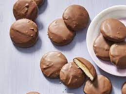

Homemade Tagalongs

No need to wait for Girl Scout Cookie season with this recipe for their famous Peanut Butter cookie!
One of the saddest parts of the year is when you run out of your supply of Girl Scout Cookies. Yop can avoid the post-cookie blues with this recipe for a homemade alternative to their famous Tagalong cookie. All told, you can have 46 cookies in roughly two and a half hours! Once you're done, you can layer these cookies between wax paper in an airtight container, they'll last 5 days chilled, or 3 months frozen!
Ingredients
- 1 cup butter, softened
- 3/4 cup white sugar
- 2 large egg yolks
- 2 teaspoons vanilla extract
- 2 cups flour
- 1 cup powdered sugar
- 1 cup peanut butter
- 1/2 cup heavy cream
- 8 ounces milk chocolate, chopped
- 8 ounces chocolate-flavor candy coating, chopped
Directions
- Beat butter in a large bowl with an electric mixer at medium speed for 30 seconds. Add sugar and salt and beat until well combined. Beat in egg yolks and vanilla. Mix in flour until dough forms. Chill, covered until dough is easy to handle (about one hour).
- Preheat the oven to 375 degrees Farenheit.
- On a lightly floured surface, roll dough to 1/4 inch thickness. Cut dough with a 2-inch cookie cutter, rerolling scraps if needed. Arrange cutouts 2 inches apart on an ungreased cookie sheet.
- Bake in the preheated oven until light brown, 7 to 8 minutes. Transfer to a wire rack to cool completely.
- In another bowl, stir together powdered sugar, peanut butter, and cream. Spread 2 teaspoons onto each cookie, leaving centers slightly mounded. Arrange on wax paper.
- Meanwhile, arrange a wire rack over wax paper. Heat milk chocolate and candy coating in a small saucepan over low heat until melted. Spoon over cookies to cover, allowing excess to drip off. Let stand on prepared rack until set.